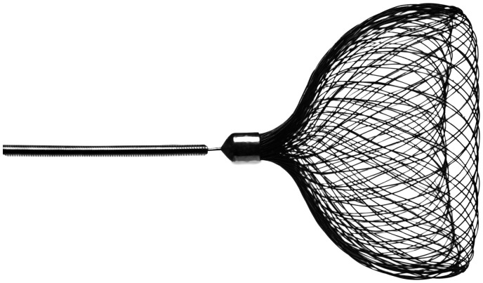
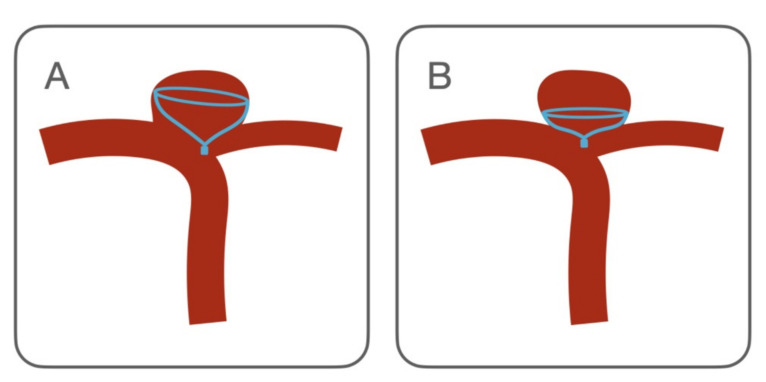
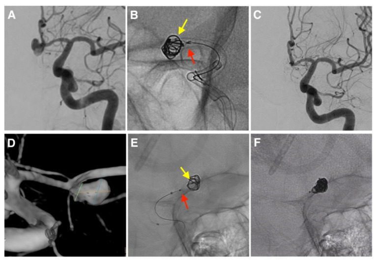
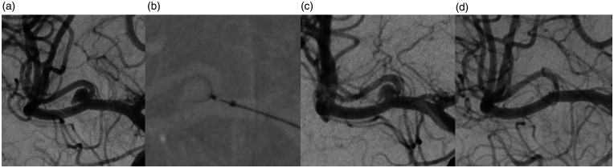

3091 — Coil hóa phối hợp thiết bị nội túi Contour (CoCoJaMBO): khi nào thêm coil, kỹ thuật "giam" microcatheter và biến chứng / Contour-assisted coiling (CoCoJaMBO)
Tags: pattern:ton-du pattern:coil-trong-tui pattern:di-tru-thiet-bi pattern:di-dang-thiet-bi vung:nao vung:mach-nao score:Raymond-Roy score:BOSS protocol:DSA protocol:CBCT protocol:CTA-pho protocol:MRA
Mức chắc chắn (certainty): tổng hợp y văn (literature synthesis) — ghép loạt CoCoJaMBO 8 túi phình (Wodarg et al. 2023, Interv Neuroradiol, PMC9893242, truy cập tự do không giấy phép mở), loạt IFD-AC 15 túi phình có ảnh DSA (Diana et al. 2022, Brain Sci 12:991, PMC9394360, CC BY 4.0), phân tích gộp 192 bệnh nhân / 206 túi (Jagtiani et al. 2026, Interv Neuroradiol, PMC11571174, CC BY 4.0), loạt 106 bệnh nhân (Wodarg et al. 2025, PMC11979839), loạt Anh 54 bệnh nhân theo dõi 2 năm (Islim et al. 2026, PMC12158970) và so sánh Contour với coil thường 42 túi (Mostafa et al. 2023, Sci Rep, PMC10039918, CC BY 4.0). Nhóm không có bệnh nhân của mình; các loạt đều hồi cứu, cỡ mẫu nhỏ (8–15 túi) cho riêng kỹ thuật phối hợp coil — mọi tỷ lệ dưới đây phải đọc kèm khoảng tin cậy rộng.
Câu chốt: Contour là lưới nitinol đặt ở mặt cổ chứ không lấp đầy buồng túi, nên khi lưới không phủ kín cổ (tồn dư kiểu "tai chó"/dog-ear), khi thiết bị phải chọn nhỏ hơn cổ để không lồi vào mạch mẹ, hoặc khi túi đã vỡ cần tắc ngay lập tức, người ta giam (jail) một microcatheter coil 0,017″ trong túi trước, thả Contour, rồi bơm coil và chỉ tháo thiết bị sau khi coil xong (CoCoJaMBO). Kỹ thuật này cho tắc hoàn toàn ngay sau thủ thuật 92,3% trong loạt 13 ca làm được, nhưng tái thông 16,7% ở theo dõi giữa kỳ và có 1/15 biến cố thiếu máu (6,7%), 1 ca tháo thiết bị sớm, 1 ca phải bít tạm mạch mẹ. Cạm bẫy chết người: coil nằm ngoài lưới, men theo thành túi — trông như "tắc" trên DSA nhưng thực chất là tồn dư thân, và đây chính là nhóm tái phát.
1. Tổng quan bệnh học – cơ chế hình ảnh (TẠI SAO)
1.1 Thiết bị: một cái "chén" nitinol ở mặt cổ, không phải lưới lấp buồng túi
- Contour Neurovascular System (CNS) là thiết bị rối loạn dòng nội túi (intrasaccular flow disruptor) dạng lưới nitinol dệt hai lớp, mỗi lớp 72 sợi (tổng 144 sợi), có 1 marker bạch kim cản quang, có thể thu hồi (retrievable) và tháo bằng điện phân (electrolytic detachment); đưa qua microcatheter 0,021″ hoặc 0,027″.
- Khác WEB (lấp đầy buồng túi, chọn cỡ theo chiều cao túi), CNS chỉ chiếm nửa dưới túi và áp mặt chén vào mặt cổ — chọn cỡ theo đường kính cổ và đường kính lớn nhất của thân, không theo chiều cao. Các cỡ thường dùng 5–14 mm.
- TẠI SAO không cần stent: toàn bộ kim loại nằm trong túi, không có vật liệu trong lòng mạch mẹ → không cần kháng kết tập kép; trong túi đã vỡ, loạt IFD-AC không dùng kháng kết tập tiểu cầu mà vẫn không có biến chứng chảy máu.
- TẠI SAO vẫn hở cổ: mặt chén là một vành tròn, còn cổ túi ngã ba thường bầu dục, lệch tâm, có thùy phụ. Khi vành không trùm hết chu vi cổ, phần cổ còn hở tạo túi thừa nhỏ hình tai chó (dog-ear) — đúng nơi dòng máu vào mạnh nhất và đúng nơi tái phát.

Hình: cấu hình đã thả của Contour Neurovascular System — vành lưới áp cổ, marker bạch kim ở tâm. Thormann M et al., Neuroradiol J 2022 (PMC9244739), Fig. 1, CC BY 4.0 — nguyên bản, không crop/ghép.1.2 Vì sao thêm coil lại chữa được — ba cơ chế
- Lấp "tai chó": coil xếp vào chỗ lưới không phủ, làm giảm vận tốc dòng và tăng diện tích bề mặt gây huyết khối ngay tại cổ hở. Trong loạt IFD-AC, chỉ 1/2 ca còn hở cổ tiến triển thành tồn dư cổ và tái phát ở theo dõi giữa kỳ.
- Ổn định thiết bị đặt thiếu cỡ: khi phải chọn CNS nhỏ hơn cổ để không lồi vào mạch mẹ, chén bị bẹp (flat configuration) và bám thành kém → nguy cơ di trú vào đáy túi. Coil chèn phía trên tạo lực giữ, biến một thiết bị "lỏng" thành khối vững.
- Tắc ngay trong túi đã vỡ: lưới đơn thuần cần thời gian huyết khối; ở túi vỡ, bệnh nhân còn ống dẫn lưu, tăng huyết áp, rối loạn đông — cần tắc cơ học tức thì để không tái vỡ. Coil bổ sung đạt việc này mà không cần kháng kết tập kép (khác stent-assisted coiling).
1.3 Vật lý hình ảnh: đọc đúng "sáng" và "tối"
- Nitinol cản quang mạnh nhưng có lỗ: một lớp cản quang mỏng len giữa các sợi là hiện tượng cơ học bình thường, không phải túi còn thông. Coil đặc hơn lưới nên khối coil sáng, đều, không hoa văn — phân biệt được bằng hoa văn dệt của lưới.
- Hiệu ứng cứng chùm tia (beam hardening) quanh nitinol tạo vệt tối cạnh viền sáng; trên CBCT, vành sáng của chén khi nhìn tiếp tuyến dễ bị đọc thành "vành cản quang thứ hai" = tồn dư.
- TẠI SAO phải chụp nhiều thì: coil làm tắc dòng ngay nhưng lưới vẫn thấm thuốc chậm vài giây; đọc tắc ở thì muộn mới phân biệt được tắc thật với ứ trệ trong lưới.
1.4 Số liệu trụ cột (bắt buộc nhớ)
| Đại lượng | Con số | Nguồn |
|---|---|---|
| CoCoJaMBO — số ca | 8 bệnh nhân (5 nữ), tuổi 60,1 ± 9,2; 3/8 sau vỡ não; thân túi 12,8 ± 7,6 mm, rộng 10,3 ± 5,4 mm, cổ 5,5 ± 2,5 mm, D/N 1,9 ± 1,0 | PMC9893242 |
| CoCoJaMBO — kết quả tức thì | Tắc hoàn toàn 5/8; 1 ca bít tạm mạch mẹ (mở lại ngay); 1 ca thiết bị tháo sớm không di chứng; không biến cố khác | PMC9893242 |
| IFD-AC (Contour/Neqstent + coil) | 15 túi (10 vỡ/5 chưa vỡ); làm được 13; RROC 1 = 12/13 (92,3%), RROC 2 = 1 (7,7%) | PMC9394360 |
| IFD-AC — biến chứng & theo dõi | Thiếu máu 1/15 (6,7%), chảy máu 0; theo dõi 12 túi: tắc đủ 83,4%, tái thông 16,7%, 1 ca phải điều trị lại bằng flow diverter | PMC9394360 |
| Phân tích gộp Contour | 192 bệnh nhân / 206 túi: tắc đủ 85% (KTC 95% 78–90), độc lập chức năng 96% (88–99), thời gian thủ thuật 76,15 phút (43,5–108,8) | PMC11571174 |
| Biến cố gộp | Thuyên tắc 6% (4–11), xuất huyết dưới nhện 1%, đột quỵ nhẹ 2%, đau đầu 1%, di trú thiết bị 4% (2–9) | PMC11571174 |
| So sánh với WEB | WEB: tắc 83,3%, điều trị lại 8,4%, thuyên tắc 5,6% — Contour 85% và 6%, khác biệt không có ý nghĩa thống kê | PMC11571174 |
| Loạt 106 bệnh nhân / 109 túi | Thả thành công 95,5%; 6 tháng RRS 1 63,4%, RRS 2 23,1%, RRS 3a 5,8%, 3b 7,2%; 12 tháng RRS 1 55,5%; 24 tháng RRS 1 70,0% | PMC11979839 |
| Loạt Anh 54 bệnh nhân | 6 tháng RROC 1 56%, tắc đủ 88%; 2 năm RROC 1 60,9%, tắc đủ 82,6% | PMC12158970 |
| Contour so với coil thường (D/N ≥ 1,6; 42 túi) | Nhanh hơn (p = 0,0002) và ít liều xạ hơn (p = 0,002); biến chứng 33,3% (coil) vs 14,3% (Contour); can thiệp lại 21,4% vs 7,6% | PMC10039918 |
- Điểm chết người về ngưỡng: "tắc hoàn toàn ngay sau thủ thuật" không đồng nghĩa "tắc bền" — trong chính loạt IFD-AC, 92,3% tắc ngay nhưng 16,7% tái thông ở theo dõi; và trong phân tích gộp, tắc đủ chỉ 85% nghĩa là 1/7 bệnh nhân còn tồn dư đủ để phải theo dõi sát.
2. Mẫu hình + chẩn đoán phân biệt theo tình huống (Gamut)
Mẫu hình khởi điểm: túi phình ngã ba cổ rộng (cổ ≥ 4 mm hoặc D/N < 2), đã đặt Contour; trên DSA sau thả còn một túi nhỏ cản quang ở mép cổ (dog-ear) hoặc thân túi còn thấm thuốc thì muộn.
- Nhóm 1 — hở cổ có chủ đích (dog-ear): lưới phủ không hết chu vi cổ; coil lấp phần hở. Đây là chỉ định chính của CoCoJaMBO.
- Nhóm 2 — thiết bị thiếu cỡ để bảo vệ mạch mẹ: chén bẹp, bám thành kém → coil giữ thiết bị tại chỗ, chống di trú.
- Nhóm 3 — túi đã vỡ: ưu tiên tắc tức thì, không chờ huyết khối tự nhiên; không dùng kháng kết tập kép nếu không có stent.
- Nhóm 4 — túi lớn/kết hợp huyết khối một phần: coil lấp phần còn thông, tránh bơm coil vào vùng huyết khối cũ (nguy cơ di trú coil và thuyên tắc).
- Nhóm 5 — tái phát sau coil thường: gắn thêm Contour ở cổ rồi coil bổ sung phần tồn dư — nhưng không thay thế được flow diverter khi cổ quá rộng.
Gamut theo lựa chọn thay thế: stent-assisted coiling (SAC), balloon-remodeling coiling, flow diverter (FD), WEB, và phẫu thuật kẹp cổ (khi túi vôi hóa, có khối máu tụ chèn ép, hoặc thất bại nội mạch nhiều lần).
3. Bảng so sánh phân biệt (ma trận đối chiếu)
| Thực thể (entity) | Hình ảnh điển hình | Chốt vào (rule-in) | Chốt loại (rule-out) | Gợi ý xác nhận |
|---|---|---|---|---|
| CoCoJaMBO (Contour + coil) | Lưới dệt hình chén áp cổ + khối coil đặc, không hoa văn nằm trong vành lưới; tồn dư cổ kiểu tai chó được lấp | Coil nằm trong vành lưới + lưới vẫn áp sát cổ ở ≥ 3/4 chu vi | Coil men theo thành túi, ngoài vành lưới → tồn dư thân, không phải "đã tắc" | DSA 2 thì + CBCT không cản quang; đối chiếu ảnh ngay sau thủ thuật với 6 tháng |
| SAC (stent + coil) | Stent trong lòng mạch mẹ + coil trong túi; cần kháng kết tập kép | Thấy stent vắt qua cổ, đầu stent ở hai bên cổ | Không thấy stent, hoặc stent gãy/gập → mất tác dụng giữ coil | CTA/CBCT mạch; DSA thì muộn; kiểm tra tuân thủ kháng kết tập |
| Flow diverter (FD) | Lưới ống trong lòng mạch mẹ, che cổ; tắc chậm 3–12 tháng | Không còn dòng vào túi ở thì muộn, lưới ống phủ cổ | Còn dòng vào túi ở 6 tháng → chưa hiệu quả, không được gọi là thất bại sớm | DSA 6–12 tháng; CTA/MRA có artifact kim loại lớn |
| WEB | Thiết bị nội túi lấp đầy buồng túi, hình trụ/cầu, chọn theo chiều cao | Thiết bị chạm cả vòm và cổ, không di trú | Thiết bị nằm lệch đáy túi, còn khoang trên đỉnh → chọn thiếu cỡ | CBCT; so cỡ thiết bị với chiều cao túi đo trên 3D |
| Balloon-remodeling coiling | Bóng tạm thời ở mạch mẹ trong lúc bơm coil; sau thủ thuật không còn kim loại ở mạch mẹ | Coil đủ đặc, không có vật liệu trong lòng mạch mẹ sau khi xả bóng | Bóng xì/di trú, coil lồi vào mạch mẹ | DSA sau xả bóng; kiểm tra coil protrusion trên 3D |

Hình: ba cấu hình mà lưới Contour không tự tắc được và cần coil bổ sung. Diana F et al., Brain Sci 2022;12:991 (PMC9394360), Fig. 3, CC BY 4.0 — nguyên bản, không crop/ghép.3.1 Ba dấu hiệu đọc ảnh quyết định (đọc theo thứ tự)
- Vành lưới có kín không? Nhìn tiếp tuyến mặt cổ trên CBCT: vành sáng phải liên tục. Mất liên tục một cung = hở cổ thật, không phải artifact.
- Coil nằm trong hay ngoài vành? Trong vành = đúng ý đồ; ngoài vành, men thành = coil lạc vào tồn dư thân — trên DSA vẫn "đặc" nhưng không có giá đỡ.
- Còn dòng vào thì muộn không? Ứ trệ trong lưới vài giây là bình thường; dòng vào túi ở ≥ 3 giây thì muộn là còn thông.
4. Protocol chụp + kỹ thuật + thang điểm
4.1 Trước thủ thuật
- DSA + chụp xoay 3D (3D rotational angiography) cho mọi ca: đo cổ, chiều cao, đường kính lớn nhất của thân, D/N, chọn working projection và cỡ thiết bị theo bảng cỡ của hãng (Cerus).
- CTA/CTV khi cần loại trừ nhánh mạch mẹ sát cổ (ngã ba MCA, ACoA) và lập kế hoạch đường vào.
4.2 Kỹ thuật CoCoJaMBO (theo mô tả nguyên văn của 2 loạt)
- Giam microcatheter coil trước: đưa microcatheter 0,017″ (Echelon 10) vào túi, giữ đầu catheter trong túi.
- Thả Contour qua microcatheter 0,021″ (hoặc 0,027″) tại mặt cổ, chưa tháo.
- Bơm coil qua catheter đã giam, xếp coil vào chỗ hở cổ/thiếu cỡ; theo dõi coil không lồi vào mạch mẹ.
- Tháo thiết bị sau khi coil xong (detachment cuối cùng) — đây là điểm khác biệt cốt lõi so với "thả thiết bị rồi mới coil".
- Kiểm tra: DSA 2 thì + CBCT; nếu coil lồi vào mạch mẹ → thu hồi coil/dùng stent chuyển hướng.
- Thuốc: heparin ACT 200–250 giây; nimodipine 15 mg qua đường guiding; túi chưa vỡ: kháng kết tập đơn hoặc kép theo protocol đơn vị; túi đã vỡ: không kháng kết tập (loạt IFD-AC làm đúng như vậy, không có biến chứng chảy máu).
4.3 Thang điểm theo dõi
- Raymond–Roy (RROC): 1 = tắc hoàn toàn; 2 = tồn dư cổ; 3a = tồn dư thân, 3b = tồn dư thân + cổ. Mốc đọc: 6 tháng, 12 tháng (và 24 tháng nếu còn tồn dư).
- BOSS (Contour) cho tồn dư trong lưới — xem bài 3076.
- Ngưỡng hành động thực hành: RROC 3a/3b ở 6 tháng hoặc tăng kích thước tồn dư → cân nhắc coil bổ sung, flow diverter hoặc mổ.
flowchart TD
A[Sau khi thả Contour: đọc DSA 2 thì + CBCT] --> B{Vành lưới kín trên 3/4 chu vi cổ?}
B -->|Có| C[Theo dõi 6 và 12 tháng]
B -->|Không: hở cổ kiểu tai chó| D{Coil có nằm trong vành lưới?}
D -->|Có| E[Tắc đủ - theo dõi]
D -->|Không: coil ngoài vành| F[Thêm coil hoặc flow diverter - không gọi là đã tắc]
C --> G{Tồn dư tăng ở 6-12 tháng?}
G -->|Có| F
G -->|Không| H[Tiếp tục theo dõi]
5. Biến thể bình thường và cạm bẫy
- Biến thể bình thường: ứ trệ cản quang trong lưới vài giây, vành sáng đôi của chén khi nhìn tiếp tuyến, vệt tối do cứng chùm tia quanh marker bạch kim — cả ba không phải tồn dư.
- Cạm bẫy 1 — "tắc trên DSA" nhưng tồn dư thân: coil đặc ở cổ che mất phần thân còn thông; phải xem thì muộn và CBCT, không kết luận trên ảnh đơn thì.
- Cạm bẫy 2 — tháo thiết bị quá sớm: 1/8 ca CoCoJaMBO tháo thiết bị sớm (không di chứng, nhưng mất cấu hình dự kiến). Tháo sau khi coil xong là quy tắc, không phải tùy hứng.
- Cạm bẫy 3 — coil lạc vào mạch mẹ: thấy đầu coil nhô ra ngoài vành lưới trên working projection → dừng bơm, kiểm tra 3D, cân nhắc thu hồi coil hoặc stent bắt coil; bỏ qua = thuyên tắc nhánh.
- Cạm bẫy 4 — chọn thiết bị to để "che hết cổ": chén lồi vào mạch mẹ gây hẹp/thuyên tắc; thà thiếu cỡ + coil bổ sung còn hơn lồi.
- Cạm bẫy 5 — bỏ theo dõi sau khi "tắc hoàn toàn": 16,7% tái thông trong loạt IFD-AC; tắc ngay không miễn trừ theo dõi 6–12 tháng.
6. Tự lượng giá — Blind Quiz
Ca 1 — túi phình ngã ba, thủ thuật phối hợp

- Gợi ý lâm sàng: túi phình ngã ba cổ rộng; bác sĩ quyết định thả thiết bị nội túi rồi bơm coil.
- Câu hỏi: Thiết bị nằm ở đâu so với khối coil? Dấu hiệu nào cho biết coil đúng chỗ? Ba chẩn đoán phân biệt của "còn cản quang ở cổ"?
Bấm để hiện đáp án (findings + chẩn đoán)
- Dấu hiệu: lưới (mũi tên đỏ) áp mặt cổ; microcatheter coil bị giam (mũi tên vàng) nằm trong túi; coil xếp trong vành lưới; các panel là 3 ca khác nhau của loạt IFD-AC.
- Chẩn đoán: CoCoJaMBO/IFD-AC — thiết bị giữ cổ, coil lấp phần hở. Cơ chế: coil trong vành lưới làm tăng diện tích bề mặt và giảm vận tốc tại cổ hở.
- Nguồn ảnh: Diana F et al., Brain Sci 2022;12:991 (PMC9394360), Fig. 1, CC BY 4.0.
Ca 2 — Contour ở túi phình ngã ba MCA

- Gợi ý lâm sàng: túi phình MCA ngã ba, cổ rộng, chưa vỡ.
- Câu hỏi: Thiết bị có phủ kín cổ chưa? Nếu còn hở một cung ở mép cổ, làm gì tiếp và vì sao?
Bấm để hiện đáp án (findings + chẩn đoán)
- Dấu hiệu: (a) DSA trước — túi phình ngã ba MCA; các panel sau là cấu hình thiết bị đã thả, mặt chén áp cổ.
- Chẩn đoán: Contour đơn thuần; nếu còn hở cổ kiểu dog-ear → coil bổ sung (CoCoJaMBO) thay vì thả thêm thiết bị.
- Nguồn ảnh: Thormann M et al., Neuroradiol J 2022 (PMC9244739), Fig. 2, CC BY 4.0.
Ca 3 — cấu hình thiết bị và quyết định thêm coil
- Gợi ý lâm sàng: ba bệnh nhân khác nhau, mỗi người một cấu hình thiết bị–túi.
- Câu hỏi: Cấu hình nào bắt buộc thêm coil? Cấu hình nào chỉ cân nhắc? Dấu hiệu nào trên CBCT phân biệt "thiếu cỡ" với "đặt sai vị trí"?
Bấm để hiện đáp án (findings + chẩn đoán)
- Dấu hiệu: (A) lưới không phủ hết cổ, còn túi thừa mép cổ; (B) thiết bị bẹp, bám thành kém do chọn nhỏ để tránh lồi vào mạch mẹ; (C) cấu hình phức tạp/túi lớn.
- Chẩn đoán: (A) và (B) là chỉ định rõ của coil bổ sung; (C) tùy dòng còn lại và nguy cơ. Phân biệt: thiếu cỡ = vành lưới liên tục nhưng không áp sát thành; đặt sai = vành lưới lệch hẳn về một phía cổ.
- Nguồn ảnh: Diana F et al., Brain Sci 2022;12:991 (PMC9394360), Fig. 3, CC BY 4.0.
Bài liên quan chéo
- 3076 — Theo dõi sau Contour: thang BOSS, di trú và "vòng sáng" của lưới
- 266 — Theo dõi sau đặt WEB túi phình
- 257 — Theo dõi tái phát sau can thiệp túi phình
Không dùng để chẩn đoán độc lập khi chưa có người hướng dẫn.